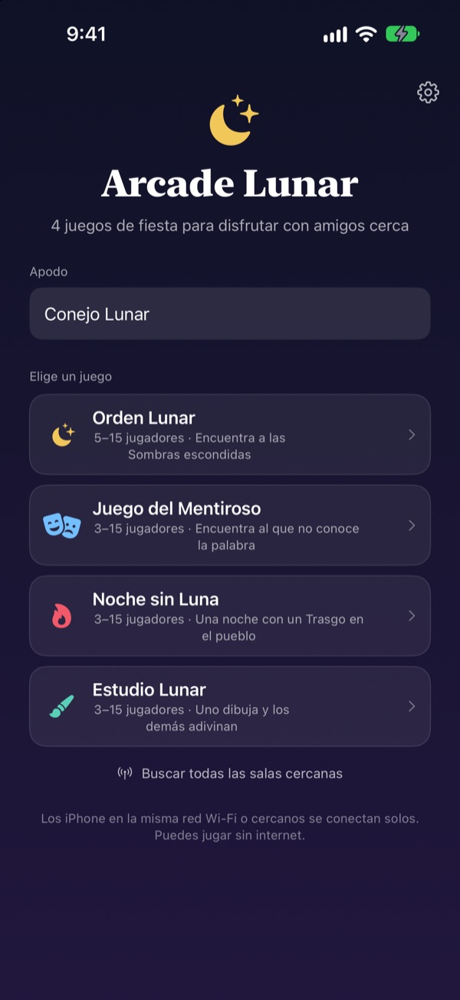
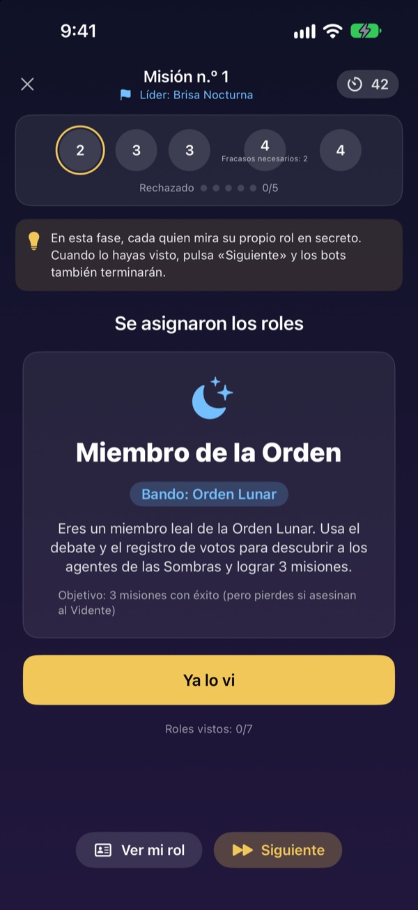
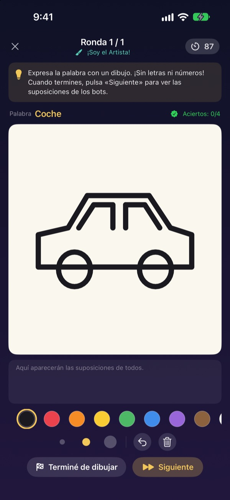
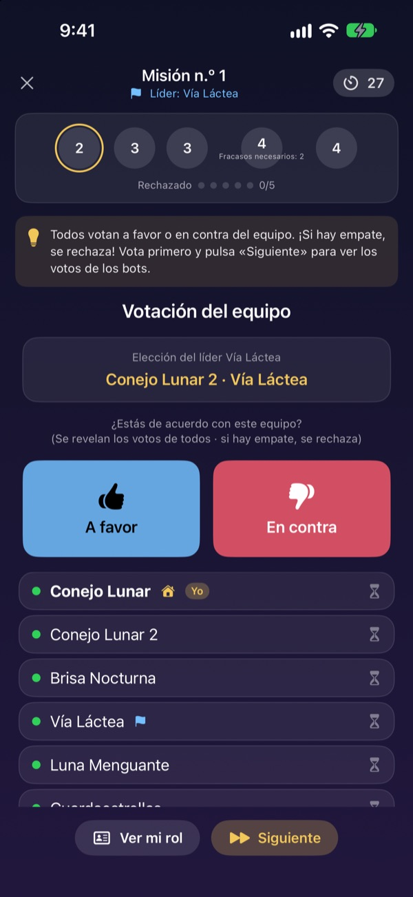

¿Ya estáis todos?
Sacad los iPhone.
Una persona crea una sala y los que estén cerca entran en segundos. Los roles y las palabras secretas solo aparecen en la pantalla de cada uno: sin cartas y sin nadie atrapado haciendo de moderador.
Todos los juegos son gratis. Sin cuenta ni internet.

Juega una ronda del Juego del Mentiroso
Imagina cinco iPhone sobre la mesa y tócalos uno a uno para mirar. Solo uno no sabe la palabra. También podéis ir pasándoos la pantalla.
Mucha gente, una noche libre y nada a qué jugar
Noche de juegos, casa rural, Navidad en familia. Para un juego de roles ocultos alguien tiene que quedarse fuera para moderar, y los papelitos doblados nunca son del todo secretos. En una casa con mal wifi, los juegos online tampoco funcionan. Arcade Lunar deja que los iPhone moderen, repartan los roles y se conecten entre sí.
Tu rol solo está en tu pantalla
Al empezar, cada iPhone recibe su rol o su palabra. Nada de repartir cartas ni de «todos cerramos los ojos».
Al votar solo se ve quién ha votado ya. A quién votó cada uno es secreto hasta el final.

Cuatro juegos para cualquier grupo
Gana con labia en el Juego del Mentiroso, caza a las Sombras con misiones y votaciones en Orden Lunar, encuentra al Trasgo en una sola noche en Noche sin Luna o dibuja y adivina en Estudio Lunar.
Orden Lunar desde 5 jugadores, el resto desde 3, y todos hasta 15.

¿Juego nuevo? Aprendido en minutos
Cada juego tiene un modo Cómo se juega en el que juegas una ronda con bots, paso a paso. Lee la pista de arriba y toca Siguiente.
Si la app se cierra o se corta la conexión, toca Continuar en la pantalla de inicio y vuelves a la misma ronda.

Empieza en tres pasos
- 1
Apodo y juego
Todos abren la app, escriben un apodo y eligen el juego.
- 2
Crear o unirse a una sala
Una persona crea la sala; los demás la encuentran en Buscar salas cercanas.
- 3
El anfitrión empieza
Cuando estén todos, el anfitrión toca Empezar partida. La app se encarga del resto.
Los cuatro juegos
- Juego del Mentiroso · 3 a 15
- Todos reciben la misma palabra menos uno. Por turnos, cada uno la describe y luego se vota al Mentiroso. Si lo pillan pero adivina la palabra, el Mentiroso gana igualmente.
- Orden Lunar · 5 a 15
- Descubre a las Sombras escondidas en la Orden. El líder elige un equipo de misión, todos votan a favor o en contra y el equipo juega en secreto éxito o fracaso. Gana el bando que antes se lleve tres misiones.
- Noche sin Luna · 3 a 15
- Una noche, y un Trasgo se esconde en el pueblo. De noche, el Chamán, el Ladrón nocturno y el Bromista actúan en secreto. Al amanecer se debate y hay una única votación para encontrar al Trasgo.
- Estudio Lunar · 3 a 15
- Uno dibuja la palabra y los demás adivinan en el chat. Cuanto antes aciertes, más puntos, y quien dibuja suma por cada acierto.
Cualquier juego se puede probar antes a solas con bots en el modo Cómo se juega.
Preguntas frecuentes
No veo la sala.
Comprueba que el anfitrión y los jugadores estén en la misma wifi o cerca unos de otros. Arcade Lunar debe estar activada en Ajustes ▸ Privacidad y seguridad ▸ Red local para encontrar dispositivos cercanos. Con wifi y Bluetooth activados la conexión es más estable.
¿Tengo que permitir el acceso a la red local?
Sí, así la app encuentra los iPhone cercanos y se conecta a ellos. Si tocaste No permitir, vuelve a activarlo en Ajustes ▸ Privacidad y seguridad ▸ Red local.
Me he desconectado en mitad de la partida.
Vuelve a abrir la app y toca Continuar en la pantalla de inicio para volver a la misma sala y ronda. Tu rol y tu puntuación siguen ahí. Si tarda en reconectar, vuelve a unirte desde la lista de salas.
Alguien no responde y la partida se ha atascado.
El anfitrión puede expulsar en cualquier momento a quien no responda; la partida se recalcula con los que quedan y sigue. El modo anfitrión GM también permite saltar un paso atascado.
¿Cuántos jugadores hacen falta?
Orden Lunar necesita 5. El Juego del Mentiroso, Noche sin Luna y Estudio Lunar empiezan con 3. Todos admiten hasta 15. ¿Sois pocos? Aprended las reglas con bots en el modo Cómo se juega.
¿Hace falta internet o una cuenta?
No. Sin registro, sin iniciar sesión y sin internet. Los iPhone cercanos se conectan directamente y los datos de la partida nunca se envían a un servidor.
¿Puedo probar un juego yo solo antes?
Sí. Elige un juego y luego Cómo se juega (práctica con bots). Los bots entran en la sala y juegas una ronda completa paso a paso.
¿Cómo informo de un fallo o propongo una idea?
Desde la app, en Ajustes (el engranaje) ▸ Soporte, o por correo a la dirección de abajo. Te responderemos lo antes posible.
Fallos, ideas o cualquier otra cosa: escribe a mizzking75@gmail.com.